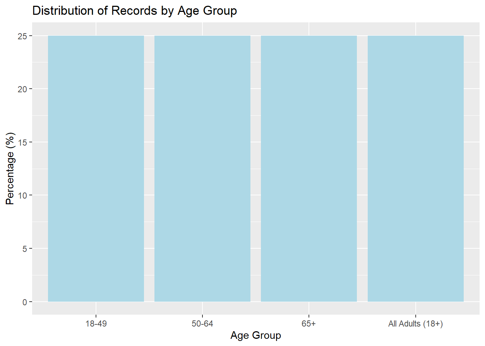
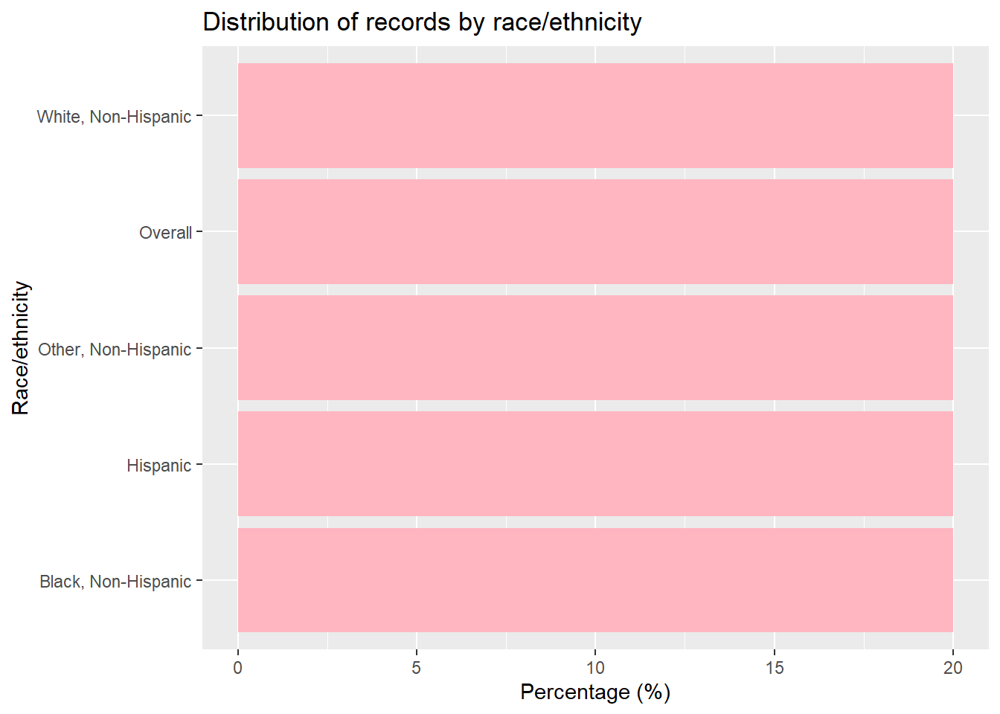
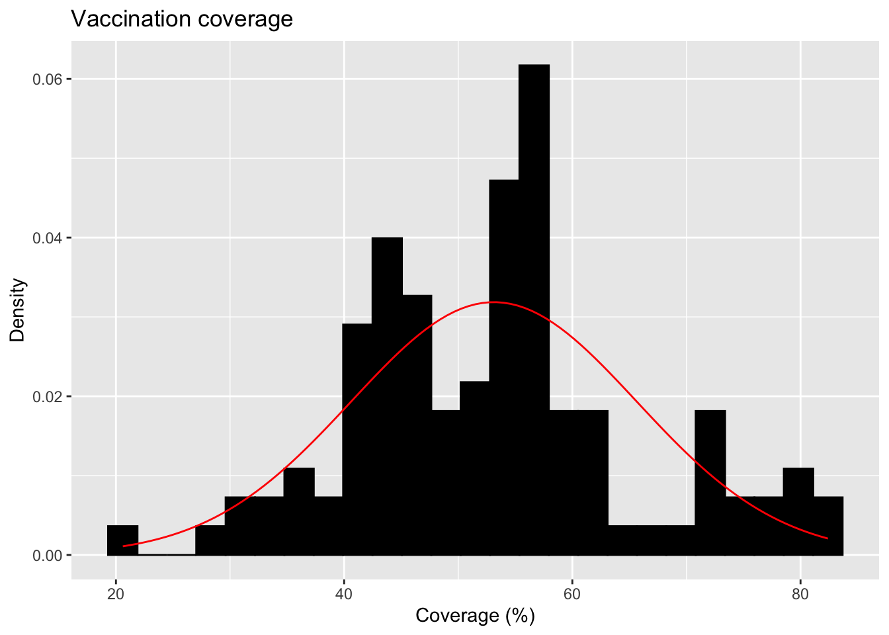
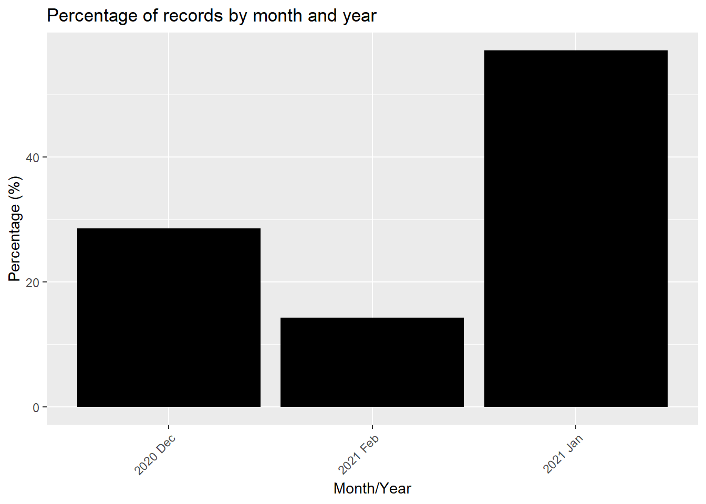

Data Analysis Exercise: Exploring flu vaccination coverage in U.S. adults (2020–21)
This dataset comes from the CDC’s Cumulative Influenza Vaccination Coverage for Adults 18 years and older in the United States during the 2020-21 flu season.
The surveys were done using two large national panels: the IPSOS KnowledgePanel Omnibus and the NORC AmeriSpeak Omnibus.Each row in the dataset gives us information like when the data was collected, what age or race/ethnicity group it refers to, what percent of adults said they had gotten a flu shot (the point estimate), and the confidence interval (range of uncertainty). It also shows the sample size corresponding to how many people responded that week in that group.
Load and process data:
Besides trimming the dataset to keep only the relevant columns, I also had to fix two issues. First, the Data_Collection_Midpoint_date column included unnecessary time information. Since all records for a given period already shared the same time, I formatted this column to display only the year and month (“2021 Jan”). Second, the Sample_Size column had a value labeled as “<30”, which made the variable non-numeric and broke summary calculations. To fix this, I converted all “<30” values to “30” so the column could be treated as a continuous numeric variable.
library(tidyverse)
Warning: package 'ggplot2' was built under R version 4.3.3
Warning: package 'readr' was built under R version 4.3.2
Warning: package 'purrr' was built under R version 4.3.2
Warning: package 'dplyr' was built under R version 4.3.2
Warning: package 'stringr' was built under R version 4.3.2
Warning: package 'lubridate' was built under R version 4.3.2
── Attaching core tidyverse packages ──────────────────────── tidyverse 2.0.0 ──
✔ dplyr 1.1.4 ✔ readr 2.1.5
✔ forcats 1.0.0 ✔ stringr 1.5.1
✔ ggplot2 3.5.1 ✔ tibble 3.2.1
✔ lubridate 1.9.3 ✔ tidyr 1.3.0
✔ purrr 1.0.2
── Conflicts ────────────────────────────────────────── tidyverse_conflicts() ──
✖ dplyr::filter() masks stats::filter()
✖ dplyr::lag() masks stats::lag()
ℹ Use the conflicted package (<http://conflicted.r-lib.org/>) to force all conflicts to become errors
library(readr)library(lubridate)library(here)
here() starts at C:/Users/saj12401/OneDrive - University of Georgia/Documents/GitHub/AyllaErmland-portfolio
#Load the dataflu_data <-read_csv(here("cdcdata-exercise", "Cumulative_Influenza_Vaccination_Coverage_20260210.csv"))
Rows: 140 Columns: 18
── Column specification ────────────────────────────────────────────────────────
Delimiter: ","
chr (8): Data_Collection_Start_Date, Data_Collection_End_Date, Data_Collecti...
dbl (8): Data_Collection_Midpoint_MMWR_Week, Data_Collection_Midpoint_MMWR_D...
num (1): Data_Collection_Midpoint_MMWR_Year
lgl (1): Suppressed
ℹ Use `spec()` to retrieve the full column specification for this data.
ℹ Specify the column types or set `show_col_types = FALSE` to quiet this message.
#Show all column names (optional)colnames(flu_data)
#Select and clean columnsflu_trimmed <- flu_data %>%select( Data_Collection_Midpoint_date, Race_Ethnicity, Age_Group, Point_Estimate, CI_Lower, CI_Upper, Sample_Size ) %>%mutate(#Format the date: "2020 Dec 19 12:00:00 AM" → "2020 Dec"Data_Collection_Midpoint_date =format(parse_date_time(Data_Collection_Midpoint_date, orders ="Y b d I:M:S p"),"%Y %b" ),#Clean Sample_Size: remove "<" if present, then convert to numericSample_Size =as.numeric(gsub("<", "", Sample_Size)) )#Save processed datasetwrite_csv(flu_trimmed, here("cdcdata-exercise", "flu_trimmed_dataset.csv"))
Exploring the data:
1st variable: Estimating frequencies of Age_Group variable:
#Creating a summary table for Age_Group:#This counts how many rows belong to each unique age groupage_summary <- flu_trimmed %>%group_by(Age_Group) %>%#Group the data by Age_Groupsummarise(count =n() #Count how many rows in each group ) %>%mutate(percent =round(100* count /sum(count), 1) #Calculate the percentage each group represents (rounded to 1 decimal) )#Print the summary tableage_summary
#Bar plot showing the percentage for each age groupggplot(age_summary, aes(x =reorder(Age_Group, -percent), y = percent)) +geom_col(fill ="lightblue") +labs(title ="Distribution of Records by Age Group", x ="Age Group", y ="Percentage (%)" )

Estimating frequencies for the 2nd variable race_ethnicity:
#Creating a summary table for Race_Ethnicity:#calculates how many records fall under each racial/ethnic group and what % that israce_summary <- flu_trimmed %>%group_by(Race_Ethnicity) %>%summarise(count =n() #Count the number of records (rows) in each group ) %>%mutate(percent =round(100* count /sum(count), 1) #Calculate what % of the total each group represents )race_summary
#Bar chart of the percentage of records by Race_Ethnicityggplot(race_summary, aes(x =reorder(Race_Ethnicity, -percent), y = percent)) +geom_col(fill ="lightpink") +#Use a bar chart (column plot) with coral colorlabs(title ="Distribution of records by race/ethnicity", x ="Race/ethnicity", y ="Percentage (%)" ) +coord_flip() #Flip coordinates so bars are horizontal

3rd Variable:
For the continuous variable of vaccination coverage, I will plot a distribution and calculate the mean and SD of this dataset.
# Histogram with normal curve (updated syntax)ggplot(flu_trimmed, aes(x = Point_Estimate)) +geom_histogram(aes(y =after_stat(density)), bins =25, fill ="black", color ="black", na.rm =TRUE) +#Add a normal distribution curve using the mean and SD from the data:stat_function(fun = dnorm,args =list(mean =mean(flu_trimmed$Point_Estimate, na.rm =TRUE),sd =sd(flu_trimmed$Point_Estimate, na.rm =TRUE) ),color ="red" ) +labs(title ="Vaccination coverage",x ="Coverage (%)",y ="Density" )

4th variable: Data_Collection_Midpoint_date
::: {.cell}
# Calculate percentage of records per monthdate_counts <- flu_trimmed %>%group_by(Data_Collection_Midpoint_date) %>%summarise(records =n()) %>%mutate(percent =round(100* records /sum(records), 1))head(date_counts) # Preview table
::: {.cell-output .cell-output-stdout}
# A tibble: 3 × 3
Data_Collection_Midpoint_date records percent
<chr> <int> <dbl>
1 2020 Dec 40 28.6
2 2021 Feb 20 14.3
3 2021 Jan 80 57.1
:::
# Bar plot showing percentage of records per monthggplot(date_counts, aes(x = Data_Collection_Midpoint_date, y = percent)) +geom_col(fill ="black") +labs(title ="Percentage of records by month and year",x ="Month/Year",y ="Percentage (%)" ) +theme(axis.text.x =element_text(angle =45, hjust =1))
::: {.cell-output-display}  ::: :::
5th variable: Sample size
#Calculate mean and standard deviation for Sample_Sizesample_size_stats <- flu_trimmed %>%summarise(mean_sample_size =mean(Sample_Size, na.rm =TRUE),sd_sample_size =sd(Sample_Size, na.rm =TRUE) )sample_size_stats